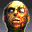

The House Of The Dead 2Detalles
 |
|
| Tiempo de juego | 1m 28s |
| Última actividad | 22/1/2026 18:07:25 |
| Añadido | 31/5/2025 1:25:31 |
| Modificado | 10/12/2025 11:27:44 |
| Estado de finalización | Jugado |
| Librería | Playnite |
| Fuente | |
| Plataforma | PC (Windows) |
| Fecha de lanzamiento | 1/11/1998 |
| Puntuación de la Comunidad | 73 |
| Puntuación de la Crítica | 67 |
| Puntuación de usuario | |
| Género | Shooter |
| Desarrollador | WOW Entertainment |
| Editor | Sega |
| Característica | Multiplayer Single Player |
| Enlaces | |
| Tag | |
Descripción
Cerrá los ojos y escuchá esto: el CLACK-CLACK de la pistola de plástico, la pantalla que te grita "RELOAD!", y tu amigo al lado gastando todas las fichas que le quedaban. The House of the Dead 2 no es un juego, es un viaje en el tiempo al corazón de los fichines de finales de los 90.
La fórmula era la perfección de la simpleza: vos no te movés, la cámara te lleva. Tu único laburo es apuntar y volarles la cabeza a hordas de zombies y monstruos antes de que te pongan una mano encima. Y para recargar, ¡tenías que disparar afuera de la pantalla! Pura memoria muscular de los que nos criamos en los salones de arcades. Un shooter puro, directo a la vena, sin vueltas.
Pero lo que hizo inmortal a este juego fue su inolvidable onda de película de terror de clase B. El guion era un delirio, tan malo que es absolutamente genial y te terminás cagando de risa mientras masacrás zombies.
En la PC, cambiamos la pistola de plástico por el mouse, pero la magia y la adrenalina siguen intactas. Es la prueba de que no necesitás una historia profunda ni gráficos de la NASA para tener uno de los shooters más divertidos y rejugables de la historia.
Un pedazo de historia de los arcades y una bomba de adrenalina. Juntate con un amigo, subí el volumen y prepárense para salvar al mundo, un headshot a la vez.
Tiene remake pero es una bosta, no lo toques.